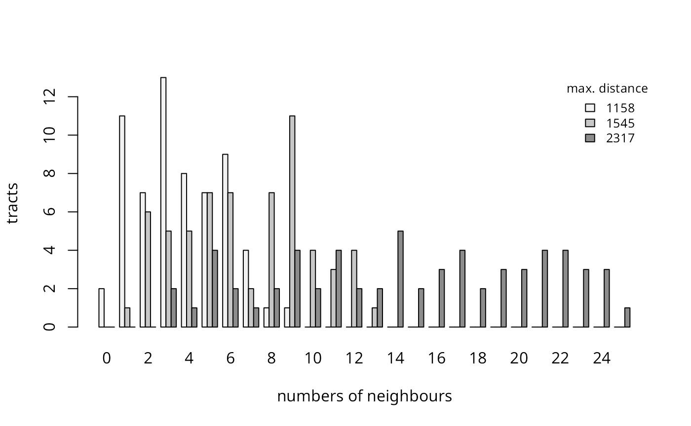

This vignette formed pp. 239–251 of the first edition of Bivand, R. S., Pebesma, E. and Gómez-Rubio V. (2008) Applied Spatial Data Analysis with R, Springer-Verlag, New York. It was retired from the second edition (2013) to accommodate material on other topics, and is made available in this form with the understanding of the publishers.
Creating spatial weights is a necessary step in using areal data, perhaps just to check that there is no remaining spatial patterning in residuals. The first step is to define which relationships between observations are to be given a non-zero weight, that is to choose the neighbour criterion to be used; the second is to assign weights to the identified neighbour links.
The 281 census tract data set for eight central New York State counties featured prominently in (Waller and Gotway 2004) will be used in many of the examples, supplemented with tract boundaries derived from TIGER 1992 and distributed by SEDAC/CIESIN. The boundaries have been projected from geographical coordinates to UTM zone~18. This file is not identical with the boundaries used in the original source, but is very close and may be re-distributed, unlike the version used in the book. Starting from the census tract queen contiguities, where all touching polygons are neighbours, used in (Waller and Gotway 2004) and provided as a DBF file on their website, a GAL format file has been created and read into R.
## Loading required package: spData## Loading required package: sf## Linking to GEOS 3.13.0, GDAL 3.9.2, PROJ 9.4.1; sf_use_s2() is TRUE
if (packageVersion("spData") >= "2.3.2") {
NY8a <- sf::st_read(system.file("shapes/NY8_utm18.gpkg", package="spData"))
} else {
NY8a <- sf::st_read(system.file("shapes/NY8_bna_utm18.gpkg", package="spData"))
sf::st_crs(NY8a) <- "EPSG:32618"
NY8a$Cases <- NY8a$TRACTCAS
}## Reading layer `NY8_utm18' from data source
## `/home/rsb/lib/r_libs/spData/shapes/NY8_utm18.gpkg' using driver `GPKG'
## Simple feature collection with 281 features and 17 fields
## Geometry type: POLYGON
## Dimension: XY
## Bounding box: xmin: 358241.9 ymin: 4649755 xmax: 480393.1 ymax: 4808545
## Projected CRS: WGS 84 / UTM zone 18N
NY8 <- as(NY8a, "Spatial")
NY_nb <- read.gal(system.file("weights/NY_nb.gal", package="spData"), region.id=as.character(as.integer(row.names(NY8))-1L))For the sake of simplicity in showing how to create neighbour
objects, we work on a subset of the map consisting of the census tracts
within Syracuse, although the same principles apply to the full data
set. We retrieve the part of the neighbour list in Syracuse using the
subset method.
Syracuse <- NY8[!is.na(NY8$AREANAME) & NY8$AREANAME == "Syracuse city",]
Sy0_nb <- subset(NY_nb, !is.na(NY8$AREANAME) & NY8$AREANAME == "Syracuse city")
summary(Sy0_nb)## Neighbour list object:
## Number of regions: 63
## Number of nonzero links: 346
## Percentage nonzero weights: 8.717561
## Average number of links: 5.492063
## Link number distribution:
##
## 1 2 3 4 5 6 7 8 9
## 1 1 5 9 14 17 9 6 1
## 1 least connected region:
## 164 with 1 link
## 1 most connected region:
## 136 with 9 linksWe can create a copy of the same neighbours object for polygon
contiguities using the poly2nb() function in
spdep. It takes an object extending the
SpatialPolygons class as its first argument, and using
heuristics identifies polygons sharing boundary points as neighbours. It
also has a snap= argument, to allow the shared boundary
points to be a short distance from one another.
class(Syracuse)## [1] "SpatialPolygonsDataFrame"
## attr(,"package")
## [1] "sp"## [1] TRUEAs we can see, creating the contiguity neighbours from the
Syracuse object reproduces the neighbours from (Waller and Gotway 2004). Careful examination of
the next figure shows, however, that the graph of neighbours is not
planar, since some neighbour links cross each other. By default, the
contiguity condition is met when at least one point on the boundary of
one polygon is within the snap distance of at least one point of its
neighbour. This relationship is given by the argument
queen=TRUE by analogy with movements on a chessboard. So
when three or more polygons meet at a single point, they all meet the
contiguity condition, giving rise to crossed links. If
queen=FALSE, at least two boundary points must be within
the snap distance of each other, with the conventional name of a `rook’
relationship. The figure shows the crossed line differences that arise
when polygons touch only at a single point, compared to the stricter
rook criterion.
## [1] FALSE
oopar <- par(mfrow=c(1,2), mar=c(3,3,1,1)+0.1)
plot(Syracuse, border="grey60")
plot(Sy0_nb, coordinates(Syracuse), add=TRUE, pch=19, cex=0.6)
text(bbox(Syracuse)[1,1], bbox(Syracuse)[2,2], labels="a)", cex=0.8)
plot(Syracuse, border="grey60")
plot(Sy0_nb, coordinates(Syracuse), add=TRUE, pch=19, cex=0.6)
plot(diffnb(Sy0_nb, Sy2_nb, verbose=FALSE), coordinates(Syracuse),
add=TRUE, pch=".", cex=0.6, lwd=2, col="orange")
text(bbox(Syracuse)[1,1], bbox(Syracuse)[2,2], labels="b)", cex=0.8)
par(oopar)a: Queen-style census tract contiguities, Syracuse; b: Rook-style contiguity differences shown as thicker orange lines
If we have access to a GIS such as GRASS or ArcGIS, we can export the
SpatialPolygonsDataFrame object and use the topology engine
in the GIS to find contiguities in the graph of polygon edges - a shared
edge will yield the same output as the rook relationship.
This procedure does, however, depend on the topology of the set of
polygons being clean, which holds for this subset, but not for the full
eight-county data set. Not infrequently, there are small artefacts, such
as slivers where boundary lines intersect or diverge by distances that
cannot be seen on plots, but which require intervention to keep the
geometries and data correctly associated. When these geometrical
artefacts are present, the topology is not clean, because unambiguous
shared polygon boundaries cannot be found in all cases; artefacts
typically arise when data collected for one purpose are combined with
other data or used for another purpose. Topologies are usually cleaned
in a GIS by
snapping' vertices closer than a threshold distance together, removing artefacts -- for example, snapping across a river channel where the correct boundary is the median line but the input polygons stop at the channel banks on each side. Thepoly2nb()function does have asnap`
argument, which may also be used when input data possess geometrical
artefacts.
library(rgrass)
v <- terra::vect(sf::st_as_sf(Syracuse))
SG <- terra::rast(terra::ext(v), crs=terra::crs(v))
pr <- initGRASS("/home/rsb/topics/grass/g840/grass84", tempdir(), SG=SG, override=TRUE)
write_VECT(v, "SY0", flags=c("o", "overwrite"))
contig <- vect2neigh("SY0")
Sy3_nb <- sn2listw(contig, style="B")$neighbours
isTRUE(all.equal(Sy3_nb, Sy2_nb, check.attributes=FALSE))
## [1] TRUESimilar approaches may also be used to read ArcGIS coverage data by tallying the left neighbour and right neighbour arc indices with the polygons in the data set, using either RArcInfo or rgdal.
In our Syracuse case, there are no exclaves or
islands' belonging to the data set, but not sharing boundary points within the snap distance. If the number of polygons is moderate, the missing neighbour links may be added interactively using theedit()method fornb`
objects, and displaying the polygon background. The same method may be
used for removing links which, although contiguity exists, may be
considered void, such as across a mountain range.
Continuing with irregularly located areal entities, it is possible to choose a point to represent the polygon-support entities. This is often the polygon centroid, which is not the average of the coordinates in each dimension, but takes proper care to weight the component triangles of the polygon by area. It is also possible to use other points, or if data are available, construct, for example population-weighted centroids. Once representative points are available, the criteria for neighbourhood can be extended from just contiguity to include graph measures, distance thresholds, and -nearest neighbours.
The most direct graph representation of neighbours is to make a Delaunay triangulation of the points, shown in the first panel in the figure. The neighbour relationships are defined by the triangulation, which extends outwards to the convex hull of the points and which is planar. Note that graph-based representations construct the interpoint relationships based on Euclidean distance, with no option to use Great Circle distances for geographical coordinates. Because it joins distant points around the convex hull, it may be worthwhile to thin the triangulation as a Sphere of Influence (SOI) graph, removing links that are relatively long. Points are SOI neighbours if circles centred on the points, of radius equal to the points’ nearest neighbour distances, intersect in two places (Avis and Horton 1985). Functions for graph-based neighbours were kindly contributed by Nicholas Lewin-Koh.
coords <- coordinates(Syracuse)
IDs <- row.names(as(Syracuse, "data.frame"))
#FIXME library(tripack)
Sy4_nb <- tri2nb(coords, row.names=IDs)
if (require(dbscan, quietly=TRUE)) {
Sy5_nb <- graph2nb(soi.graph(Sy4_nb, coords), row.names=IDs)
} else Sy5_nb <- NULL##
## Attaching package: 'dbscan'## The following object is masked from 'package:stats':
##
## as.dendrogram
Sy6_nb <- graph2nb(gabrielneigh(coords), row.names=IDs)
Sy7_nb <- graph2nb(relativeneigh(coords), row.names=IDs)
oopar <- par(mfrow=c(2,2), mar=c(1,1,1,1)+0.1)
plot(Syracuse, border="grey60")
plot(Sy4_nb, coords, add=TRUE, pch=".")
text(bbox(Syracuse)[1,1], bbox(Syracuse)[2,2], labels="a)", cex=0.8)
plot(Syracuse, border="grey60")
if (!is.null(Sy5_nb)) {
plot(Sy5_nb, coords, add=TRUE, pch=".")
text(bbox(Syracuse)[1,1], bbox(Syracuse)[2,2], labels="b)", cex=0.8)
}
plot(Syracuse, border="grey60")
plot(Sy6_nb, coords, add=TRUE, pch=".")
text(bbox(Syracuse)[1,1], bbox(Syracuse)[2,2], labels="c)", cex=0.8)
plot(Syracuse, border="grey60")
plot(Sy7_nb, coords, add=TRUE, pch=".")
text(bbox(Syracuse)[1,1], bbox(Syracuse)[2,2], labels="d)", cex=0.8)
par(oopar)a: Delauney triangulation neighbours; b: Sphere of influence neighbours (if available); c: Gabriel graph neighbours; d: Relative graph neighbours
Delaunay triangulation neighbours and SOI neighbours are symmetric by
design – if
is a neighbour of
,
then
is a neighbour of
.
The Gabriel graph is also a subgraph of the Delaunay triangulation,
retaining a different set of neighbours (Matula
and Sokal 1980). It does not, however, guarantee symmetry; the
same applies to Relative graph neighbours (Toussaint 1980). The graph2nb()
function takes a sym argument to insert links to restore
symmetry, but the graphs then no longer exactly fulfil their neighbour
criteria. All the graph-based neighbour schemes always ensure that all
the points will have at least one neighbour. Subgraphs of the full
triangulation may also have more than one graph after trimming. The
functions is.symmetric.nb() can be used to check for
symmetry, with argument force=TRUE if the symmetry
attribute is to be overridden, and n.comp.nb() reports the
number of graph components and~the components to which points belong
(after enforcing symmetry, because the algorithm assumes that the graph
is not directed). When there are more than one graph component, the
matrix representation of the spatial weights can become block-diagonal
if observations are appropriately sorted.
nb_l <- list(Triangulation=Sy4_nb, Gabriel=Sy6_nb,
Relative=Sy7_nb)
if (!is.null(Sy5_nb)) nb_l <- c(nb_l, list(SOI=Sy5_nb))
sapply(nb_l, function(x) is.symmetric.nb(x, verbose=FALSE, force=TRUE))## Triangulation Gabriel Relative SOI
## TRUE FALSE FALSE TRUE## Triangulation Gabriel Relative SOI
## 1 1 1 1An alternative method is to choose the
nearest points as neighbours – this adapts across the study area, taking
account of differences in the densities of areal entities. Naturally, in
the overwhelming majority of cases, it leads to asymmetric neighbours,
but will ensure that all areas have
neighbours. The knearneigh() function returns an
intermediate form converted to an nb object by
knn2nb(); knearneigh() can also take a
longlat= argument to handle geographical coordinates.
Sy8_nb <- knn2nb(knearneigh(coords, k=1), row.names=IDs)## Warning in knn2nb(knearneigh(coords, k = 1), row.names = IDs): neighbour object
## has 15 sub-graphs
Sy9_nb <- knn2nb(knearneigh(coords, k=2), row.names=IDs)
Sy10_nb <- knn2nb(knearneigh(coords, k=4), row.names=IDs)
nb_l <- list(k1=Sy8_nb, k2=Sy9_nb, k4=Sy10_nb)
sapply(nb_l, function(x) is.symmetric.nb(x, verbose=FALSE, force=TRUE))## k1 k2 k4
## FALSE FALSE FALSE## k1 k2 k4
## 15 1 1
oopar <- par(mfrow=c(1,3), mar=c(1,1,1,1)+0.1)
plot(Syracuse, border="grey60")
plot(Sy8_nb, coords, add=TRUE, pch=".")
text(bbox(Syracuse)[1,1], bbox(Syracuse)[2,2], labels="a)", cex=0.8)
plot(Syracuse, border="grey60")
plot(Sy9_nb, coords, add=TRUE, pch=".")
text(bbox(Syracuse)[1,1], bbox(Syracuse)[2,2], labels="b)", cex=0.8)
plot(Syracuse, border="grey60")
plot(Sy10_nb, coords, add=TRUE, pch=".")
text(bbox(Syracuse)[1,1], bbox(Syracuse)[2,2], labels="c)", cex=0.8)
par(oopar)a: neighbours; b: neighbours; c: neighbours
The figure shows the neighbour relationships for
,
with many components for
.
If need be,
-nearest
neighbour objects can be made symmetrical using the
make.sym.nb() function. The
object is also useful in finding the minimum distance at which all areas
have a distance-based neighbour. Using the nbdists()
function, we can calculate a list of vectors of distances corresponding
to the neighbour object, here for first nearest neighbours. The greatest
value will be the minimum distance needed to make sure that all the
areas are linked to at least one neighbour. The
dnearneigh() function is used to find neighbours with an
interpoint distance, with arguments d1 and d2
setting the lower and upper distance bounds; it can also take a
longlat argument to handle geographical coordinates.
## Min. 1st Qu. Median Mean 3rd Qu. Max.
## 395.7 587.3 700.1 760.4 906.1 1544.6
max_1nn <- max(dsts)
max_1nn## [1] 1544.615
Sy11_nb <- dnearneigh(coords, d1=0, d2=0.75*max_1nn, row.names=IDs)## Warning in dnearneigh(coords, d1 = 0, d2 = 0.75 * max_1nn, row.names = IDs):
## neighbour object has 4 sub-graphs
Sy12_nb <- dnearneigh(coords, d1=0, d2=1*max_1nn, row.names=IDs)
Sy13_nb <- dnearneigh(coords, d1=0, d2=1.5*max_1nn, row.names=IDs)
nb_l <- list(d1=Sy11_nb, d2=Sy12_nb, d3=Sy13_nb)
sapply(nb_l, function(x) is.symmetric.nb(x, verbose=FALSE, force=TRUE))## d1 d2 d3
## TRUE TRUE TRUE## d1 d2 d3
## 4 1 1
oopar <- par(mfrow=c(1,3), mar=c(1,1,1,1)+0.1)
plot(Syracuse, border="grey60")
plot(Sy11_nb, coords, add=TRUE, pch=".")
text(bbox(Syracuse)[1,1], bbox(Syracuse)[2,2], labels="a)", cex=0.8)
plot(Syracuse, border="grey60")
plot(Sy12_nb, coords, add=TRUE, pch=".")
text(bbox(Syracuse)[1,1], bbox(Syracuse)[2,2], labels="b)", cex=0.8)
plot(Syracuse, border="grey60")
plot(Sy13_nb, coords, add=TRUE, pch=".")
text(bbox(Syracuse)[1,1], bbox(Syracuse)[2,2], labels="c)", cex=0.8)
par(oopar)a: Neighbours within 1,158m; b: neighbours within 1,545m; c: neighbours within 2,317m
The figure shows how the numbers of distance-based neighbours increase with moderate increases in distance. Moving from times the minimum all-included distance, to the all-included distance, and times the minimum all-included distance, the numbers of links grow rapidly. This is a major problem when some of the first nearest neighbour distances in a study area are much larger than others, since to avoid no-neighbour areal entities, the distance criterion will need to be set such that many areas have many neighbours.
dS <- c(0.75, 1, 1.5)*max_1nn
res <- sapply(nb_l, function(x) table(card(x)))
mx <- max(card(Sy13_nb))
res1 <- matrix(0, ncol=(mx+1), nrow=3)
rownames(res1) <- names(res)
colnames(res1) <- as.character(0:mx)
res1[1, names(res$d1)] <- res$d1
res1[2, names(res$d2)] <- res$d2
res1[3, names(res$d3)] <- res$d3
library(RColorBrewer)
pal <- grey.colors(3, 0.95, 0.55, 2.2)
# RSB quietening greys
barplot(res1, col=pal, beside=TRUE, legend.text=FALSE, xlab="numbers of neighbours", ylab="tracts")
legend("topright", legend=format(dS, digits=1), fill=pal, bty="n", cex=0.8, title="max. distance") Distance-based neighbours: frequencies of numbers of neighbours by census tract
The figure shows the counts of sizes of sets of neighbours for the three different distance limits. In Syracuse, the census tracts are of similar areas, but were we to try to use the distance-based neighbour criterion on the eight-county study area, the smallest distance securing at least one neighbour for every areal entity is over 38km.
dsts0 <- unlist(nbdists(NY_nb, coordinates(NY8)))
summary(dsts0)## Min. 1st Qu. Median Mean 3rd Qu. Max.
## 82.7 1505.0 3378.7 5865.8 8954.3 38438.1If the areal entities are approximately regularly spaced, using distance-based neighbours is not necessarily a problem. Provided that care is taken to handle the side effects of “weighting” areas out of the analysis, using lists of neighbours with no-neighbour areas is not necessarily a problem either, but certainly ought to raise questions. Different disciplines handle the definition of neighbours in their own ways by convention; in particular, it seems that ecologists frequently use distance bands. If many distance bands are used, they approach the variogram, although the underlying understanding of spatial autocorrelation seems to be by contagion rather than continuous.
Distance bands can be generated by using a sequence of
d1 and d2 argument values for the
dnearneigh() function if needed to construct a spatial
autocorrelogram as understood in ecology. In other conventions,
correlograms are constructed by taking an input list of neighbours as
the first-order sets, and stepping out across the graph to second-,
third-, and higher-order neighbours based on the number of links
traversed, but not permitting cycles, which could risk making
a neighbour of
itself (O’Sullivan and Unwin 2003). The
nblag() function takes an existing neighbour list and
returns a list of lists, from first to maxlag= order
neighbours.
Sy0_nb_lags <- nblag(Sy0_nb, maxlag=9)## Warning in nblag(Sy0_nb, maxlag = 9): lag 6 neighbour object has 7 sub-graphs## Warning in nblag(Sy0_nb, maxlag = 9): lag 7 neighbour object has 22 sub-graphs## Warning in nblag(Sy0_nb, maxlag = 9): lag 8 neighbour object has 52 sub-graphs## Warning in nblag(Sy0_nb, maxlag = 9): lag 9 neighbour object has 63 sub-graphs
names(Sy0_nb_lags) <- c("first", "second", "third", "fourth", "fifth", "sixth", "seventh", "eighth", "ninth")
res <- sapply(Sy0_nb_lags, function(x) table(card(x)))
mx <- max(unlist(sapply(Sy0_nb_lags, function(x) card(x))))
nn <- length(Sy0_nb_lags)
res1 <- matrix(0, ncol=(mx+1), nrow=nn)
rownames(res1) <- names(res)
colnames(res1) <- as.character(0:mx)
for (i in 1:nn) res1[i, names(res[[i]])] <- res[[i]]
res1## 0 1 2 3 4 5 6 7 8 9 10 11 12 13 14 15 16 17 18 19 20 21 22 23 24
## first 0 1 1 5 9 14 17 9 6 1 0 0 0 0 0 0 0 0 0 0 0 0 0 0 0
## second 0 0 0 0 2 2 0 6 6 11 11 4 3 7 4 6 1 0 0 0 0 0 0 0 0
## third 0 0 0 0 0 0 0 1 3 5 5 7 14 6 8 3 3 0 1 1 1 3 1 0 1
## fourth 0 0 0 0 0 0 0 0 1 3 5 7 16 16 5 3 3 2 0 1 1 0 0 0 0
## fifth 0 0 0 1 1 3 1 1 3 7 13 12 8 9 3 1 0 0 0 0 0 0 0 0 0
## sixth 6 3 0 2 8 2 5 5 4 8 9 5 5 1 0 0 0 0 0 0 0 0 0 0 0
## seventh 21 7 4 5 9 7 3 5 1 0 0 0 1 0 0 0 0 0 0 0 0 0 0 0 0
## eighth 49 6 5 2 1 0 0 0 0 0 0 0 0 0 0 0 0 0 0 0 0 0 0 0 0
## ninth 63 0 0 0 0 0 0 0 0 0 0 0 0 0 0 0 0 0 0 0 0 0 0 0 0This shows how the wave of connectedness in the graph spreads to the third order, receding to the eighth order, and dying away at the ninth order - there are no tracts nine steps from each other in this graph. Both the distance bands and the graph step order approaches to spreading neighbourhoods can be used to examine the shape of relationship intensities in space, like the variogram, and can be used in attempting to look at the effects of scale.
When the data are known to be arranged in a regular, rectangular
grid, the cell2nb() function can be used to construct
neighbour lists, including those on a torus. These are useful for
simulations, because, since all areal entities have equal numbers of
neighbours, and there are no edges, the structure of the graph is as
neutral as can be achieved. Neighbours can either be of type rook or
queen.
cell2nb(7, 7, type="rook", torus=TRUE)## Neighbour list object:
## Number of regions: 49
## Number of nonzero links: 196
## Percentage nonzero weights: 8.163265
## Average number of links: 4
cell2nb(7, 7, type="rook", torus=FALSE)## Neighbour list object:
## Number of regions: 49
## Number of nonzero links: 168
## Percentage nonzero weights: 6.997085
## Average number of links: 3.428571When a regular, rectangular grid is not complete, then we can use knowledge of the cell size stored in the grid topology to create an appropriate list of neighbours, using a tightly bounded distance criterion. Neighbour lists of this kind are commonly found in ecological assays, such as studies of species richness at a national or continental scale. It is also in these settings, with moderately large , here ,103, that the use of a sparse, list based representation shows its strength. Handling a matrix for the eight-county census tracts is feasible, easy for a matrix for Syracuse census tracts, but demanding for a 3,,103 matrix.
data(meuse.grid)
coordinates(meuse.grid) <- c("x", "y")
gridded(meuse.grid) <- TRUE
dst <- max(slot(slot(meuse.grid, "grid"), "cellsize"))
mg_nb <- dnearneigh(coordinates(meuse.grid), 0, dst)
mg_nb## Neighbour list object:
## Number of regions: 3103
## Number of nonzero links: 12022
## Percentage nonzero weights: 0.1248571
## Average number of links: 3.874315##
## 1 2 3 4
## 1 133 121 2848